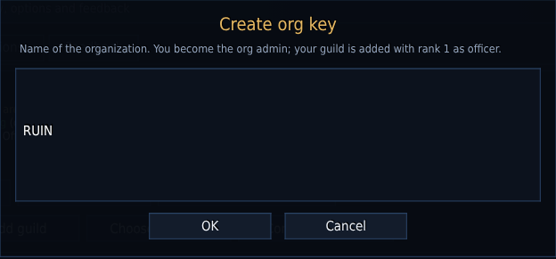
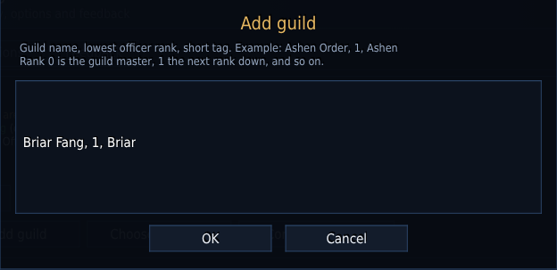
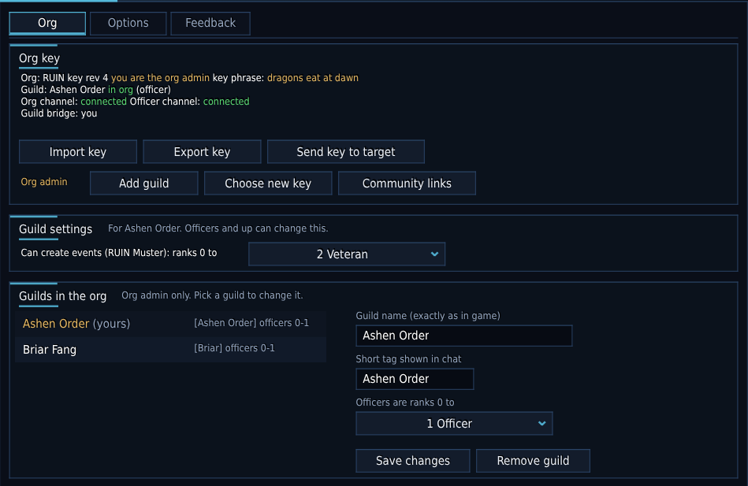
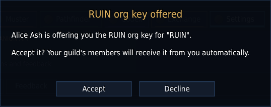
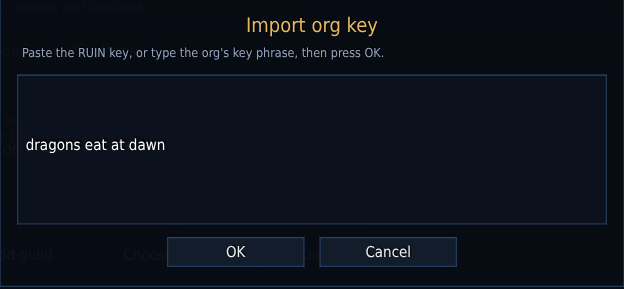

RUIN Gaming Companion App · Setup guide
An Org is a group of guilds that RUIN connects: shared guild chat, every guild's roster, events, crafters and the looking-for-group board. This guide takes you from nothing to a running Org with all your guilds in it.
Setting up an Org takes one person at the start, then one leader per guild. Members don't do anything.
Creates the Org, adds and removes guilds, and hands the key to each guild's leader. Usually the guild master of the main guild. Every character on the admin's WoW account is admin.
Accept the key once for their guild. After that, their RUIN passes it to members automatically.
Install RUIN and log in. They get the key from an officer, or type the Org's key phrase.
Interface/AddOns folder and enable the RUIN addons at the character screen. Get the latest zip from github.com/10kDevils/RUIN_Suite/releases.Officer rank is a number. Ranks count down from the top of the guild's rank list: 0 is the guild master, 1 the rank below, and so on. The officer rank is the lowest rank that counts as an officer, so 1 means "the guild master and the rank below". Officers get RUIN's officer chat and pass the key to their members.
Pick the admin's account with care. The admin role stays with the WoW account that creates the Org; RUIN 0.4.1 can't hand it to someone else. If the Org needs a new admin later, the new admin creates a new Org and the guilds take the new key.
The admin does this once.
Type /ruin (or pick RUIN in the minimap's addon menu), open the Settings tab, then the Org page.
Type the Org's name (for example RUIN) and press OK. You are now the Org admin, and your guild is in the Org with ranks 0 and 1 as officers.

Next RUIN asks for a key phrase: 6 to 40 characters, like dragons eat at dawn. Anyone in one of the Org's guilds can then join by typing the phrase. Leave it empty for a random key instead; it is safer, but you hand it out in the game or as a long text to copy.
Capitals and extra spaces don't matter in a phrase. You can set or change it later with Choose new key.
Under Guilds in the org, pick your guild. If your officers sit lower than rank 1, change Officers are ranks 0 to (your own guild's rank names are shown) and press Save changes.
Still on Settings → Org, for each other guild:
Type the guild's name, its officer rank and a short tag, separated by commas, then press OK:
Briar Fang, 1, Briar
The tag is what RUIN shows in chat and on the roster, like [Briar]. Leave it out and RUIN uses the guild's name.

The guild appears under Guilds in the org. Pick it to fix a typo in the name, change the tag or the officer rank, then press Save changes. A name that doesn't match the game exactly is the most common reason a guild can't connect.

Each added guild needs the key once, given to its guild master or an officer. Pick whichever way suits you.
Target the other guild's leader (or one of its officers) and press Send key to target. They see a prompt and press Accept. No typing or copying. Without a target, the button asks for their full character name.

Tell them the phrase (Discord, a whisper). They open Settings → Org, press Import key, type the phrase and press OK, or type /ruin key join dragons eat at dawn. RUIN fetches the key from an Org member who is online, within a few seconds.

Someone from the Org has to be online for this to work, and the player's guild must already be added. The phrase gives the member key; the guild's officers get the officer channel from you or another officer later.
Press Export key (admin only), copy the whole text that starts with RUIN1: and send it to the leader. They press Import key, paste it and press OK. This key includes the officer channel, so give it only to guild leaders.
Once a guild's leader or an officer has the key, their RUIN passes the member key to every guildmate running RUIN when they log in, and the officer channel to the other officers. Members can also type the key phrase under Import key.
On Settings → Org, the key card should say Guild: (your guild) in org and Org channel: connected. /ruin status prints the same in chat. Right after logging in RUIN can take up to a minute to connect, because it lets the game's own channels join first.
Then try it: say something in guild chat, and players in the other guilds see it with your guild's tag. The Guild tab's Roster lists every guild's members.
| To do this | Do this |
|---|---|
| Add a guild later | Add guild, then give its leader the key (step 3). |
| Rename a guild, change its tag or officer rank | Pick it under Guilds in the org, change it, Save changes. Online officers get the change at once and pass it on. |
| Remove a guild | Pick it and press Remove guild. The officer channel changes. With a key phrase, also choose a new phrase so they can't rejoin. |
| Lock out people who left | Choose new key: type a new phrase, or leave it empty for a random key. Officers online get it at once; tell everyone else the new phrase. |
| Share Discord, website and stream links | Community links: one per line, like Discord = https://discord.gg/yourcode. They show on everyone's Guild page. |
| Let more ranks create events (RUIN Muster) | Each guild's officers set Can create events: ranks 0 to under Guild settings. |
| Run the Org from an alt | Nothing to do: every character on the admin's account is admin, once the admin character has logged in. |
| You see | What to do |
|---|---|
| "Your guild is not listed in this key yet" or not in org key | The admin adds the guild with its name exactly as the game shows it (Settings → Org → Add guild, or fix the name under Guilds in the org). |
| "You are not in a guild" | RUIN connects members of the Org's guilds. Join one of them first. |
| "No RUIN member answered on that key phrase" | Check the spelling of the phrase, and try again when someone from the Org is online. |
| "Import failed: the key is damaged" or "incomplete" | Copy the whole exported key again, from RUIN1: to the last character. |
| "Only the org admin can export the org key" | Only the admin exports. Officers use Send key to target, or share the key phrase. |
| Org channel stays joining | Wait a minute after logging in. If it stays, the admin chooses a new key (someone outside RUIN may hold the channel). |
| Members don't get the key | An officer of their guild with the key must be online once while they are. Or give them the key phrase. |
| Command | What it does |
|---|---|
/ruin | Open or close the RUIN window. |
/ruin key create <name> | Create the Org (you become admin). |
/ruin key addguild <guild>, <rank>, <tag> | Admin: add a guild. |
/ruin key editguild <guild>, <new name>, <rank>, <tag> | Admin: change a guild's entry. |
/ruin key removeguild <guild> | Admin: remove a guild. |
/ruin key send <name> | Offer the key to another guild's leader. |
/ruin key join <phrase> | Join with the Org's key phrase. |
/ruin key newkey [phrase] | Admin: a new key phrase, or a new random key. |
/ruin status | Print your Org, guild and channel status. |